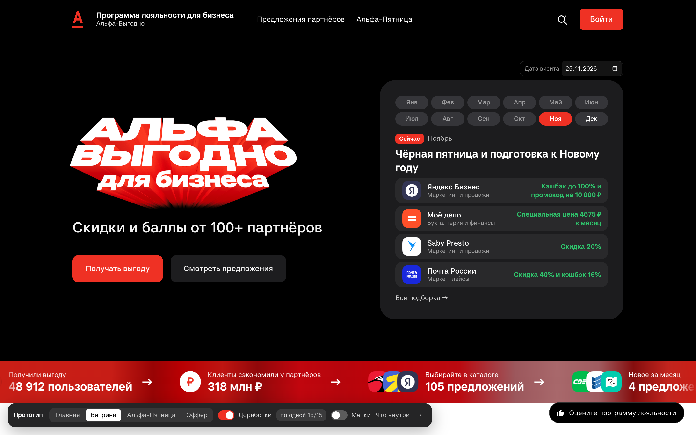
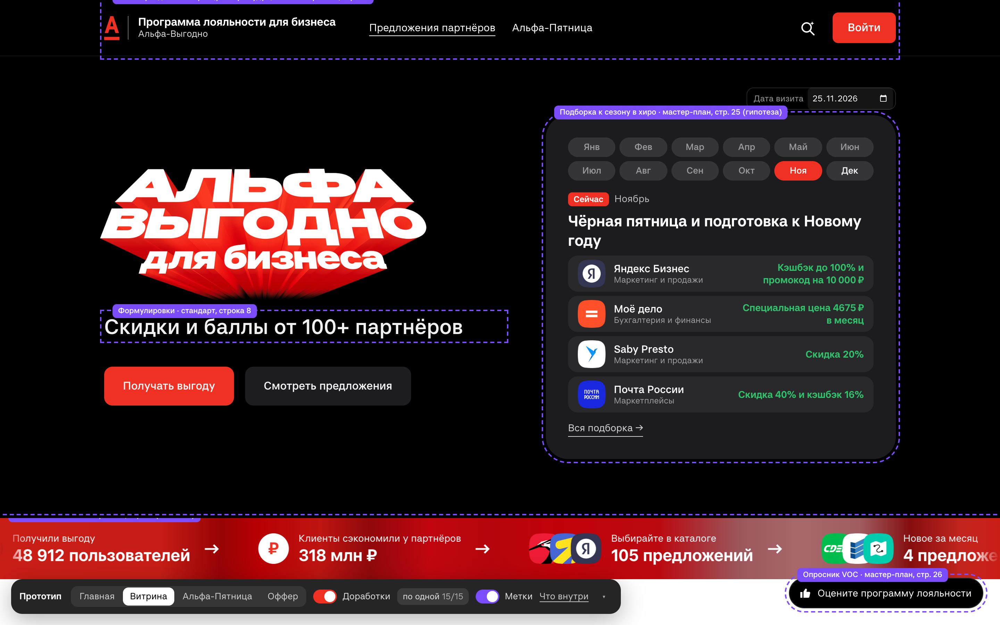
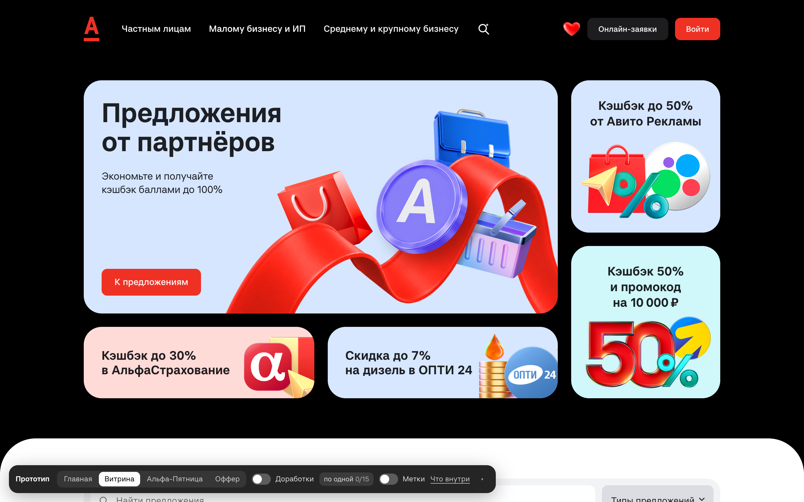
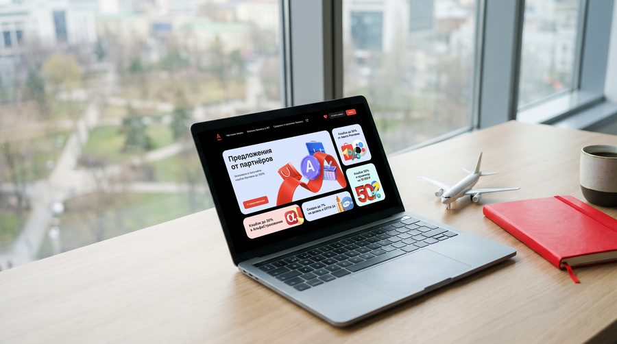
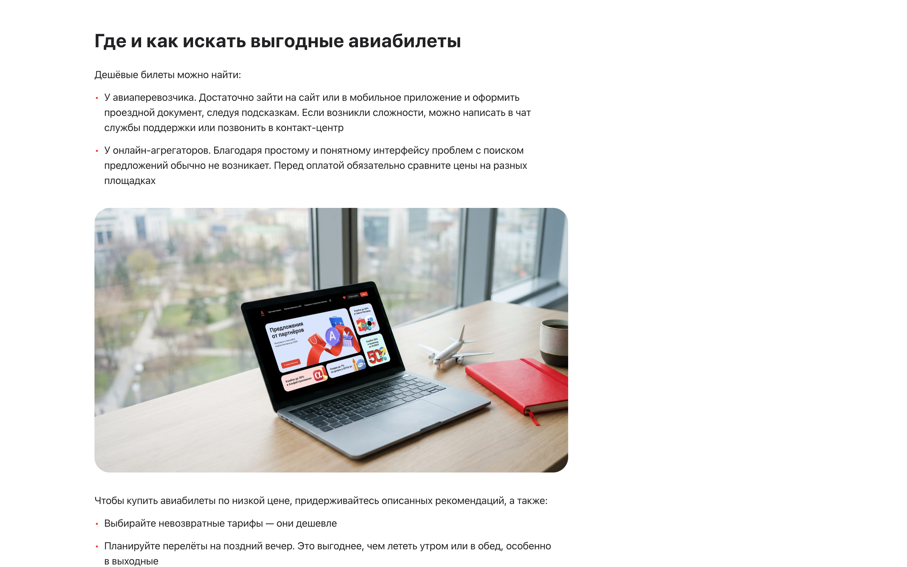

Настроил ИИ под себя,пользуются все
Два простых кейса, которые экономят время коллегам, и система, из которой они выросли
Кто пользуется ИИ каждый день?
А кто сделал с ИИ то, чем пользуются коллеги?
- письмо и пост
- саммари встречи
- идеи и тексты
экономит время одному человеку
- прототип для пяти ролей команды
- картинки к статьям без очереди к дизайнерам маркетинга
экономит время команде и ресурс компании
Найдите на этой витрине то, чего ещё нет на проде


Без прототипа идея доходит до разработки через глухой телефон
Продакт
Фильтр по сфере бизнеса над каталогом
Дизайнер
Фильтр… где-то над каталогом?
Аналитик
Какой-то фильтр. Что в нём считаем?
Разработка
Фильтр чего? Как это оценить?
Контент-менеджер
А сферы откуда брать?
Сначала проверяем идею на людях, потом тратим разработку
Прототип
Минимум времени: несколько дней работы с ИИ
Юзабилити
Исследователи тестируют гипотезу на прототипе, а не на боевых страницах
Вывод
Понятно, что работает, что исправить, а что не трогать
Разработка
Только то, что нужно пользователю
Шесть дней, из них 5 часов работы ИИ в диалоге: как двигалась задача
Снял прод: тексты, шрифт, цвета, каталог
Каждой доработке свой переключатель
Состав по строкам плана 2027, сверка описаний
Мои правки: шапка, бегущая строка, хиро
Клик-тест 190 сценариев, сверка с продом до 8 px
Готово: 4 страницы, 37 переключателей
Прод держит заголовки на ручных переносах из CMS
Скрипт расставляет переносы как на проде
Вид собран по описанию в плане и BRD
Каждая такая доработка помечена «условно»
В трёх сверках 20.11 сверщик нашёл 15 неверных и около 39 неточных мест
Исправили до показа
Прод и доработки на одной странице: открыть может каждый

.github.io/loyalty-prod-plus
SEO попросило картинки в статьи, которые помогают индексировать страницы
Рамки компании и брендбук: стоковые фото на свои страницы не ставим
Ресурс дизайнеров маркетинга дефицитный, картинку ждём неделями
Картинки по правилам гайда банка: вместо фотостоков нейро-фото
В разделе программы лояльности 17 статей, начали с одной: «Как выгодно купить билеты на самолёт».
Модель сделала 7 вариантов за вечер, в статью пошли три

в статьеСцены без текста в кадре и красный акцент. Экран ноутбука генерируем зелёным, настоящий скриншот витрины ставит скрипт. Nano Banana 2.1 для предметов, Pro для рук и света.
- Сейчас в тексте иллюстраций нет, только обложка
- Три картинки в разделах статьи
- Ноутбук с настоящей витриной партнёров
.github.io/ai-images

Ресурс дизайнеров маркетинга уходит туда, где без них нельзя
Похожих задач много: вот что можно сделать с ИИ для коллег
Чтобы делать такое, нужна своя система
Обычный чат почти не знает твою работу: кто ты, где файлы, какие правила, приходится объяснять заново.
Своя система это ИИ, который уже знает твою работу: правила команды, шаблоны документов, где что лежит. А перед отдачей работу проверяет отдельный агент-сверщик.
Зачем: повторяемые задачи идут по готовой инструкции, а результат можно отдать коллегам. Так и получились прототип и картинки.
Путь трудный и недешёвый: я проходил курсы и наступал на грабли. Проверку пришлось встроить в саму систему, и поправок стало на треть меньше. В гайде всё по шагам, чтобы обойти грабли, на которые наступил я.
Свою систему строю с мая 2026
Выберите задачу, результата которой ждут коллеги, и попробуйте отдать её ИИ. С данными банка только во внутренний ИИ банка.